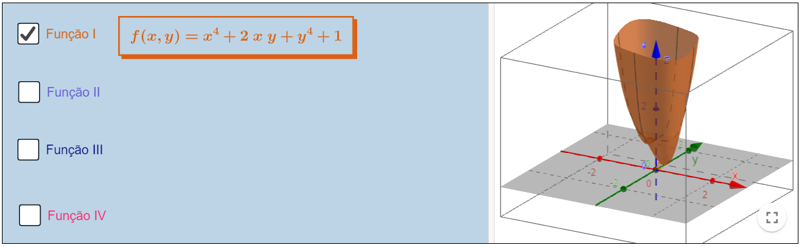
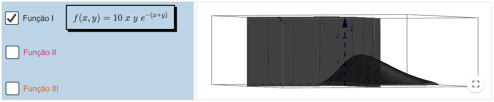
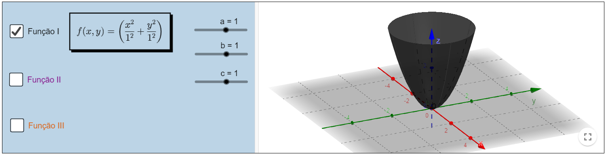
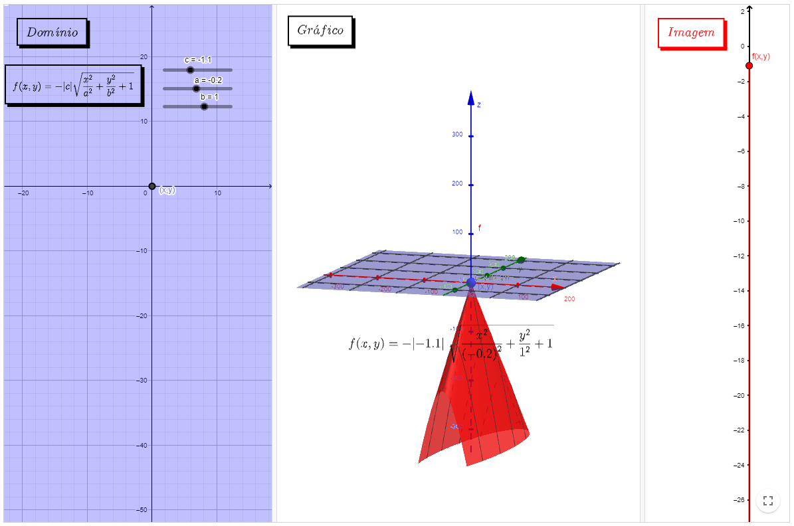
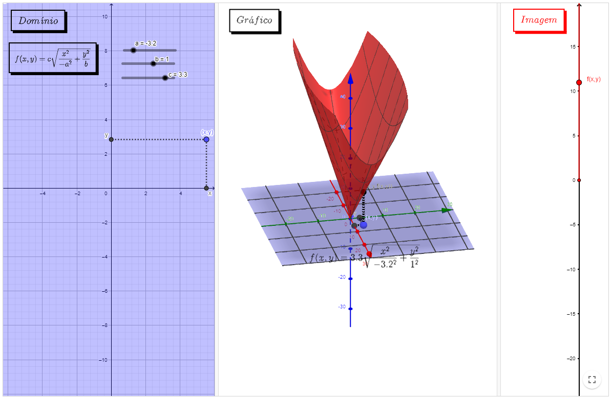
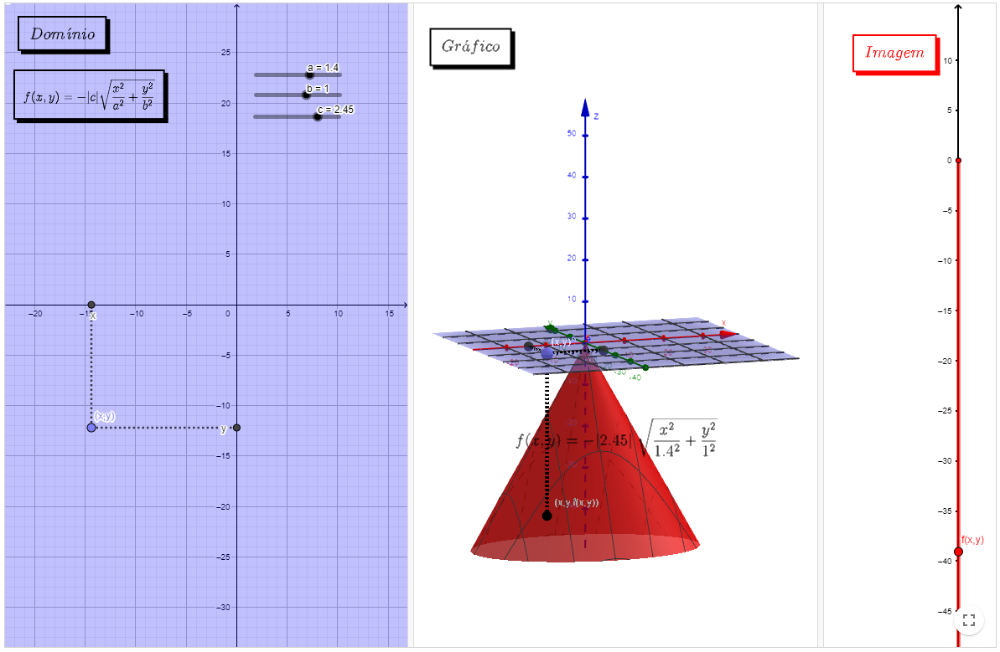
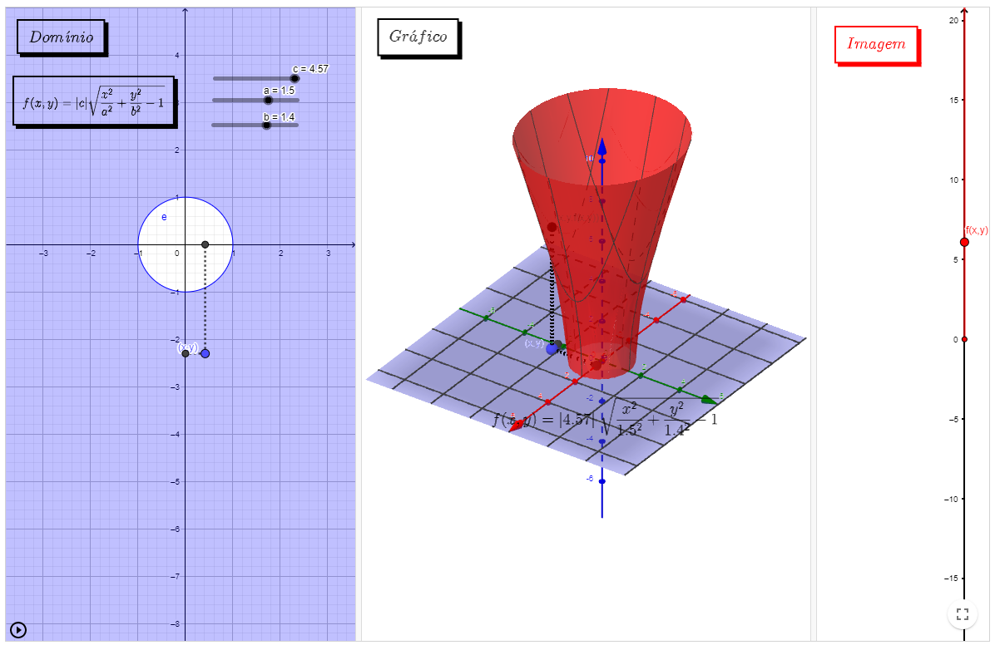
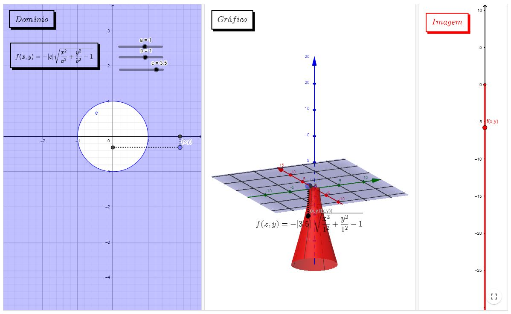

Cálculo diferencial de várias variáveis
FUNÇÕES REAIS DE VÁRIAS VARIÁVEIS
Domínio, imagem, gráfico e superfícies de nível.
Exemplos de funções na ciência e na engenharia
Uma função de várias variáveis reais é uma correspondência que associa um ponto de \(\mathbb{R}^{n}\) com exatamente um número real. Ela aparece naturalmente na ciência e na engenharia. Por exemplo:
- A área de um retângulo de lados \(x=a\) e \(y=b\): A(a,b)=ab
- O volume de um cone circular de radio da base \(r\) e algura \(h\): \(V(r,h)=\pi r^2 h\)
- Pressão de um gás: \(P(T,V)=k\frac{T}{V}\)
- A distância de um ponto à origem: \(D(x,y,z)=\sqrt{x^2+y^2+z^2}\)
- Equação de uma onda: \(g(x,y)=\sin{(x+cy)+\cos{(x+cy)}}\)
- Uma tabela de valores
Essas funções podem ser de vários tipos: polinomiais, racionais, exponenciais, logarítmicas, trigonométricas, etc. Observe que a função área do retângulo e a função volume do cone são polinomiais, enquanto a função pressão é racional. Já a função distância é composição do polinômio \(x^2+y^2+z^2\) com a função raíz \(f(x)=\sqrt{x}\,\) (a qual é uma função de uma variável real).
Os elementos básicos de uma função são o conjunto domínio (os pontos onde a expressão faz sentido ou input do problema), o conjunto imagem (os valores que devolve a experssão ou output do problema) e o gráfico (produto cartesiano domínio x imagem). Cada um desses conjuntos fornecem informações relevantes para entender o problema original e assim poder estrair conclusões relevantes.
Assista o vídeo a seguir sobre domínio e gráfico de funções
Função
Dado um conjunto \(Dom \; F\subseteq \; R^{n}\) com \(n \geq 2\), uma função escalar de várias variáveis é uma correspondência, \(F:Dom(F)\subseteq R^{n}\rightarrow \mathbb{R})\),
que a cada coordenada \(\;t \;\epsilon \; \displaystyle Dom(F) \; \) na forma \(t \; = \; (t_{1},t_{2},...,t_{n}) \; \), associa um e apenas um \(z \; \epsilon \; \mathbb{R} \).
No nosso caso trabalharemos com funções escalares com domínio sendo um subconjunto de \(R^{2} \; \) ou \( \; R^{3} \). Logo nossa função será de uma das seguintes formas:
\(\bullet \; F \; : \; Dom(F) \; \subseteq \; \mathbb{R}^{2}\rightarrow \), tal que para cada \((x,y) \; \mapsto z \), onde \((x,y) \; \epsilon \; Dom(F) \).
\(\bullet \; F \; : \; Dom(F) \; \subseteq \; \mathbb{R}^{3}\rightarrow \), tal que para cada \((x,y,z) \; \mapsto t \), onde \((x,y,z) \; \epsilon \; Dom(F) \).
Domínio
O domínio de uma função \(F: \; Dom(F) \; \subseteq \; \mathbb{R}^{n}\rightarrow \mathbb{R} \) , com \(n\geq 2 \), é conjunto de pontos na forma \( (x_{1},x_{2},..,x_{n}) \) que quando aplicados em \(F\) retornam um valor real, ou seja,
\( F(x_{1},x_{2},..,x_{n}) \mapsto z \; \) com \( z \; \epsilon \; \mathbb{R} \).
Imagem
A imagem de uma função \( F: Dom(F) \; \subseteq \; \mathbb{R}^{n}\rightarrow \mathbb{R} \), com \( n\geq 2 \), é o subconjunto da reta real que é gerado pela função ao ser aplicada nos pontos do domínio. Ou seja \( z \; \epsilon \; Im(F) \),
se \( \exists (x_{1},x_{2},...,x_{n}) \; \epsilon \; Dom(F) \) tal que \( F(x_{1},x_{2},..,x_{n}) \mapsto z \; \) com \( z \; \epsilon \; \mathbb{R} \).
O gráfico de uma função \( F: Dom(F) \; \subseteq \; \mathbb{R}^{n}\rightarrow \mathbb{R} \), com \( n\geq 2 \), é o subconjunto de \(\mathbb{R}^n \times \mathbb{R} \) que é gerado pela função ao ser aplicada nos pontos do domínio. Ou seja são os pontos \(x,y,z\) tais que \((x,y)\in Dom(F)\) e \(z=F(x,y)\).
Assista o vídeo sobre domínio e gráfico de funções
Assista o vídeo sobre imagem de funções
Nos recursos abaixo é possível observar algumas funções escalares polinomiais com duas variáveis, algumas funções racionais e funções escalares básicas.
Obs: Sugerimos que ative uma função por vez, para uma melhor visualização do esboço. Para isso, desative a caixa clicando novamente antes de prosseguir para uma nova função.
Polinomiais
Exemplos básicos
No recurso abaixo é possível observar que, através do isolamento de uma variável e sua restrição para valores positivos ou negativos, é possível gerar uma função escalar de várias variáveis a partir de uma Superfície Quádrica (apresentada no capítulo 4 dessa obra).
Obs: No applet abaixo as barras deslizantes referem-se aos coeficientes das funções. Para uma melhor compreensão, ative a caixa de uma função e observe o que ocorre ao variar os valores de a, b e c.
Definição
Definição
Observe os exemplos a seguir, neles é possível observar o domínio a esquerda, o esboço da função ao centro e o subconjunto da reta real que forma a imagem a direita. No domínio, as barras deslizantes definem os valores embutidos na função. No gráfico, é possível manipular o ponto (x,y) a esquerda e observar a coordenada (x,y,z) percorrer a superfície.Obs: Caso o ponto (x,y) retorne um ponto (x,y, f(x,y)) que não apareça na superfície, afaste o gráfico central para uma melhor visualização.
Exemplo I
Exemplo II
Exemplo III
Exemplo IV
Exemplo V

O conteúdo apresentado foi gerado através das notas da professora Denise de Oliveira Pinto, do Departamento de Matemática Aplicada da Universidade Federal Fluminense.
Co-autores: Author:Begoña Alarcón, Guilherme Cardoso Garcia de Carvalho, Raphael Odalvo.